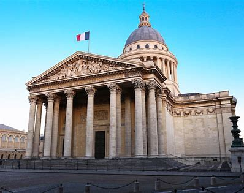

MONIMENTS
Tour Eiffel
La tour Eiffel est une tour de fer puddlé de 330 mètres de hauteur (avec antennes) située à Paris, à l’extrémité nord-ouest du parc du Champ-de-Mars en bordure de la Seine dans le 7e arrondissement. Construite en 1889 pour l’Exposition universelle de Paris, elle est devenue le symbole de la capitale française et un site touristique majeur. Elle offre une vue panoramique exceptionnelle sur la ville

Acr de Trionphe
L’Arc de Triomphe de Paris est l’un des monuments les plus célèbres de la ville. Situé à l’extrémité ouest des Champs-Élysées, il célèbre les victoires militaires françaises et commémore les soldats tombés au combat. Construit sous Napoléon Ier, il est un symbole national et offre une vue panoramique sur la ville.
Le Grand Palais
Le Grand Palais de Paris, construit pour l’Exposition universelle de 1900, est un monument emblématique situé près des Champs-Élysées. C’est un lieu d’expositions et de salons artistiques. Sa structure mêle Classicisme et Art Nouveau, et il est classé monument historique.
Le Sacré-Coeur
La Basilique du Sacré-Cœur de Montmartre, située au sommet de la butte Montmartre à Paris, est un sanctuaire dédié à l’adoration eucharistique et à la miséricorde divine. Construite pour l’Exposition universelle de 1900, elle est un symbole religieux majeur et offre une vue panoramique exceptionnelle sur la ville.
Le Pathéon
Le Panthéon de Paris, situé dans le 5e arrondissement, est un monument néoclassique. À l’origine une église dédiée à Sainte Geneviève, il honore désormais des personnalités marquantes de l’histoire de France. C’est un lieu de mémoire et de recueillement.

Le Musée du Louvre
Le Musée du Louvre, situé au cœur de Paris, est le plus grand musée d’art et d’histoire de France. Construit pour l’Exposition universelle de 1900, il abrite des collections exceptionnelles, allant de l’Antiquité à l’art contemporain. La pyramide de verre à l’entrée est emblématique, et le Louvre est l’un des sites touristiques les plus visités au monde.
La Sainte Chapelle
La Sainte-Chapelle, dite aussi Sainte-Chapelle du Palais, est une chapelle palatine édifiée sur l’île de la Cité, à Paris, à la demande de saint Louis. Elle abrite des reliques de la Passion, dont la Sainte Couronne d’épines. Ce joyau du gothique rayonnant est célèbre pour ses 1113 vitraux.
La conciergerie
La Conciergerie, située au cœur de Paris, est un trésor historique niché sur l’île de la Cité. Ancien palais royal et prison de Marie-Antoinette, elle est classée au patrimoine mondial de l’UNESCO. Ce site captivant est chargé d’histoire et offre une vue sur le passé tumultueux de la France.
L'Opéra Garnier
L’Opéra Garnier, également connu sous le nom de Palais Garnier, est un magnifique théâtre situé au cœur de Paris. Construit pour l’Exposition universelle de 1900, il est un chef-d’œuvre architectural du XIXe siècle. Le Palais Garnier est le plus grand opéra d’Europe, avec une capacité de 2000 sièges. Il abrite des spectacles de ballet et est célèbre pour sa pyramide de verre à l’entrée. Une visite vous permettra de découvrir ses espaces publics riches en histoire et son ambiance artistique.
Le Pont Alexandre-III
Le Pont Alexandre-III est un magnifique pont en arc qui enjambe la Seine à Paris. Il relie le quartier des Champs-Élysées à ceux des Invalides et de la Tour Eiffel. Ce pont est largement considéré comme le plus ornementé et extravagant de la ville. Il est classé monument historique français depuis 1975.
le Palais du Luxembourg
Le Palais du Luxembourg, situé dans le 6e arrondissement de Paris, est le siège du Sénat français. Construit à partir de 1615 pour la reine Marie de Médicis, il est un chef-d’œuvre architectural du XVIIe siècle. Le Palais du Luxembourg est entouré par le jardin du Luxembourg et abrite également le musée du Luxembourg.
Le sublime Obélisque de la Concorde
L’obélisque de Louxor, érigé depuis 1836 au centre de la place de la Concorde à Paris, provient du temple d’Amon de Louxor en Égypte. Classé monument historique, il est le plus ancien monument de Paris, antérieur à la fondation de la capitale. Cet impressionnant obélisque est un symbole de l’amitié franco-égyptienne et offre une vue majestueuse sur la ville.
Hotel des Invalides
L’Hôtel des Invalides, situé au cœur de Paris, est un complexe monumental. Construit sous Louis XIV en 1677, il abritait à l’origine des vétérans et invalides de l’armée. Aujourd’hui, il regroupe plusieurs musées et monuments relatifs à l’histoire militaire de la France, dont le Musée de l’Armée. Le site est également un lieu de cérémonies nationales et militaires